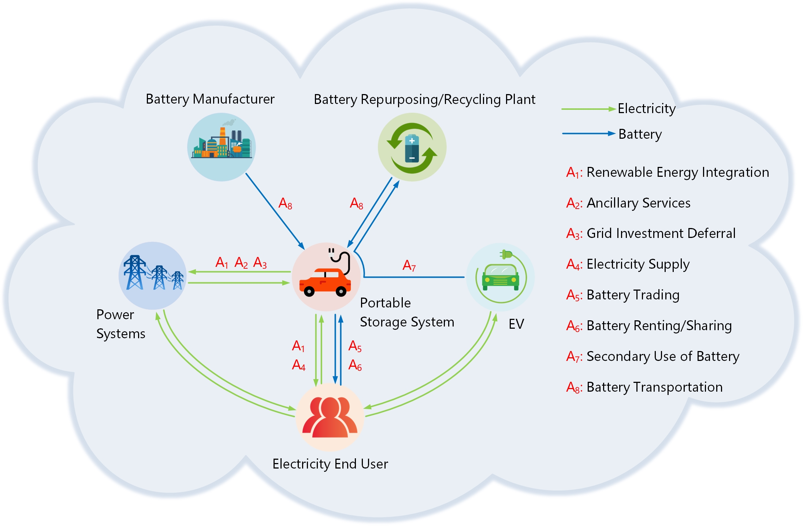

Research: Battery Network Optimization
A typical portable energy storage system (PESS) in a battery network integrates utility-scale energy storage (e.g., battery packs), energy conversion systems, and vehicles (e.g., trucks, trains, or even ships). The PESS has a variety of potential applications in energy and transportation systems and can switch among different applications across space and time serving different entities, like a platform of on-demand resource, as shown in Figure 1. PESSs can provide the same services as stationary energy storage systems (SESSs), such as renewable energy integration, various ancillary services, grid congestion relief to defer investments, and so on. But the portability of PESS also enhances its capability to tap into multiple value streams that have spatiotemporal variability, which in turn improves its asset utilization and potentially its value proposition over the SESS. When renewable energy integration is limited by grid transmission capacity, a PESS taking advantage of spatiotemporal arbitrage opportunities by traveling between grid nodes with congestion (where constructing new transmission lines is cost-inefficient and time-consuming) to charge at low-price nodes with overabundant renewable energy and discharge at high-price nodes can integrate more renewable energy and thus generate a higher revenue than a SESS.
Besides spatiotemporal arbitrage, PESSs can also serve as physical platforms for battery trading, sharing, and reuse, complemented by on-demand financial contracts. For example, electricity consumers at different locations can bid into a battery renting market to request the service of PESS for demand charge reduction at different times, sharing the same battery resource. In addition, PESSs could potentially support recycling and reuse of batteries from EVs as vehicles that can meet the government regulations for transporting battery and also as potential platforms for on-board battery selection/processing and fast battery redeployment.
